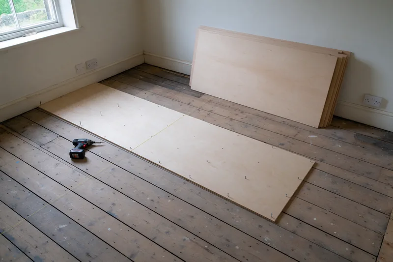

Home / Services / Skirting, architrave and flooring prep
Skirting, architrave and flooring prep
Skirting, architrave and flooring prep.
Long runs scribed into corners rather than mitred and filled, architrave tight at the head, and floors made flat and quiet before anybody lays anything on top of them.
Why internal corners get scribed, not mitred
Put two lengths of moulded skirting into an internal corner with a mitre and it looks perfect on the day. Then the timber shrinks a little, as it always does, and the mitre opens into a thin dark line right in the corner where your eye goes. Filler holds for a winter and then cracks along the same line.
A scribe is the other way round. One length goes in square to the wall. The second is cut to the exact profile of the first with a coping saw, so it sits over it like a shadow. When the timber moves, the joint slides over itself and stays closed. It takes longer, it needs a steadier hand, and it is the difference you notice five years later rather than on the day.
Walls that are not flat, which is all of them
A long run of skirting against an old plastered wall has to deal with the wall bowing in and out. Pulled tight at every fixing it follows the bow and you get a wavy top edge. Set straight you get gaps behind it. The answer is a bit of both: packed where the wall falls away, eased where it bulges, and the top edge kept straight because that is the line people see.
Architrave is the same story at the door. The lining is rarely plumb and the mitre at the head is rarely a true forty five, so the angle gets taken off the actual lining with a bevel. Cut to forty five because that is what the chart says and you get a gap at the top corner of every door in the house.
Getting a floor ready for flooring
Most flooring complaints are not about the flooring. They are about what was under it. Old boards that cup and move, a dip across the middle of the room, a creak nobody dealt with first, or a layer of hardboard that was nailed down on a damp afternoon.
Preparation means fixing the squeaks at the source, screwing loose boards down properly rather than nailing them, checking the floor with a long level and a straight edge, and then sheeting it over with plywood where it needs it, screwed on a close pattern so nothing can move. Lay a beautiful floor on a bad subfloor and you will hear about it every time somebody walks across the room.
 Generated photo
Generated photoGenerated for this demo. Not a photograph of a real job.
 Generated photo
Generated photoArchitrave at the head. The mitre is cut to the angle the lining actually gives, not to forty five degrees.
On the job
How this one usually goes.
- Old stuff off, carefullyLevered rather than ripped, because the plaster behind it is usually softer than the skirting. Old nails pulled, and anything that comes away with the wall gets mentioned before it is a surprise.
- A look at what is behindPipes, cables, a wall that is damp at the bottom, a floor that moves. All of it is better found now than after a run of new skirting is on and painted.
- Set out the long runs firstThe longest wall and the wall you see from the door get the full lengths and the best joints. Joins in a run go where they are least visible, cut as a splay rather than a butt.
- Scribed into corners, splayed on joinsInternal corners scribed with a coping saw. External corners mitred off the angle the wall actually gives. Lengths joined with a long splay that stays closed when timber moves.
- Fixed to something solidScrewed or nailed into timber grounds, studs or plugged into masonry on a close enough pattern that the top edge stays straight. Heads punched below the surface, not left proud for the decorator to find.
- Architrave, then the tidy upArchitrave cut off the actual lining angles, pushed up tight at the head, pinned and punched. Then filled where fixings show, offcuts away and the floor swept.
A sample running order for this demo. Yours depends on the property and what the timber turns out to be doing.
From sawn to finished
Five stages a length of timber goes through.
Drawn in the browser rather than photographed.
Questions
Asked about this job.
Can you match the skirting I already have?
Usually. Older houses have deep moulded skirting that nobody stocks, and there are three ways round it: find the closest off the shelf profile and accept it is close rather than identical, have the exact profile run specially from a sample, or build it up from two or three standard sections, which is often how it was done originally.
We will take a cutting of yours, show you the options and tell you which looks right in that room. In a hallway where old and new meet in plain sight it matters. In a bedroom with a door between them, often it does not.
Should the skirting go on before or after the flooring?
It depends what the flooring is. Boards and engineered timber need room to expand, and the neat way to allow for it is to lay the floor first and then have the skirting cover the gap round the edge.
Carpet is the other way round: skirting first, carpet tucked under. The order is worth settling before anybody buys anything, because getting it wrong means either a beading you did not want or a gap you cannot hide.
My floor creaks and dips. Can that be sorted before new flooring?
Yes, and it is the part worth paying for. Loose boards get screwed down rather than nailed, the squeak gets dealt with at the joint that is actually moving, and a dip gets packed or the whole floor gets sheeted over in plywood screwed on a close pattern.
What we will not do is lay something nice on top of a floor that moves. You would hear it every day and blame the new floor.
Do you lay the flooring too?
We do plenty of timber and engineered boards, and we do the preparation for anything. Carpet and vinyl are specialist trades with their own kit and we will tell you straight that somebody else does them better.
Where we come in either way is making the floor underneath flat, quiet and fixed down properly first, which is the part that decides how the finished floor behaves.
Can you fit panelling or box in pipes while you are here?
Yes, and it is the same sort of work: set out, scribed to the wall, fixed into something solid. Panelling below a dado, a boxed in boiler pipe, a bulkhead over a run of services, a window board.
It is worth doing at the same time as the skirting, because the skirting and the panelling have to agree with each other at the bottom and that is far easier when the same person is fitting both.
General trade knowledge written for this demo, not advice on your property.
Our work
Sample jobs like this.
Generated photoScribed, not mitred and filledRastrick · SampleGenerated photoTight at the headMytholmroyd · Sample
Generated photoA floor made flat and quietHebden Bridge · SampleMade up samples with generated pictures. Tap one for the detail.
Also
The other things we do.
Internal doors and fire doors
Hung to the opening you have rather than the one the door was made for. Recesses cut by hand, gaps even all the way round, and it still shuts in August.
More →Staircases and banisters
New spindles and handrails, newel posts, and the creaks taken out of a flight that has been annoying somebody for years. Fitted so the whole thing feels solid under your hand.
More →Fitted wardrobes and storage
Built into the alcove you have, out of square walls and all. Scribed tight to the plaster, up to the ceiling, with no gap on top collecting boxes.
More →Sash and timber window repairs
Rotten sections spliced out and new timber let in, sash cords and weights sorted, and the whole thing working again without a plastic window going in.
More →Decking and garden joinery
Decks, gates, stores and screens, framed properly and set so water runs off rather than sits. Outside timber either drains or it rots, and the framing decides which.
More →Shall somebody come and measure it?
Tell us the job and your postcode. Twenty minutes with a tape and a level tells us more than any photograph.